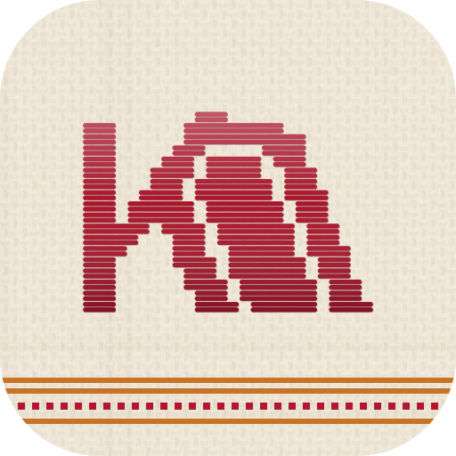
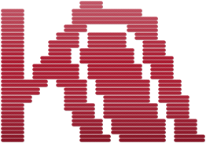
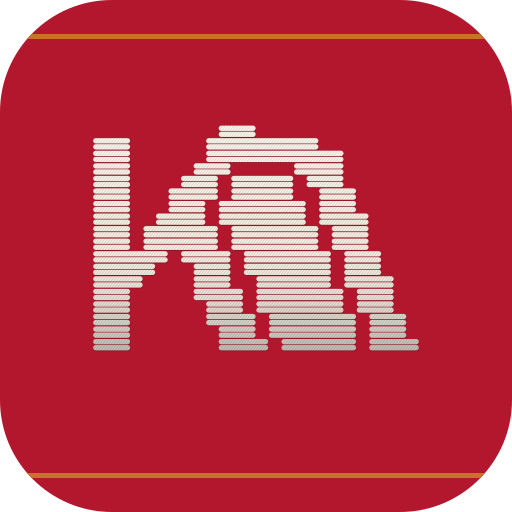
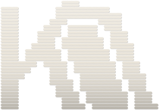
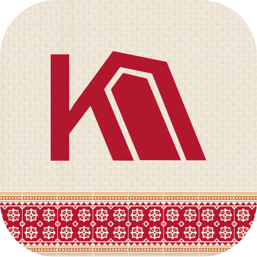

Your K mark, brought into the gamosa. In A and B the K is traced onto the thread grid and woven as red (or cream) yarn; C keeps the solid K and lays a gamosa's woven end beneath it. Each is shown as the app icon at three sizes and as the header lockup with কামঘৰ. Rebuild with node tests/make-logo.mjs.
The K is woven in red thread into cream cotton, with a thin gamosa trim below. Closest to the woven lettering.


KaamghorকামঘৰThe icon is a piece of the gamosa's red border with the K woven into it in cream. Strongest at small sizes and on a phone's home screen.


KaamghorকামঘৰYour K as it is, in gamosa red, sitting on the cloth with the red woven border folded along the bottom, the way a gamosa is presented.
